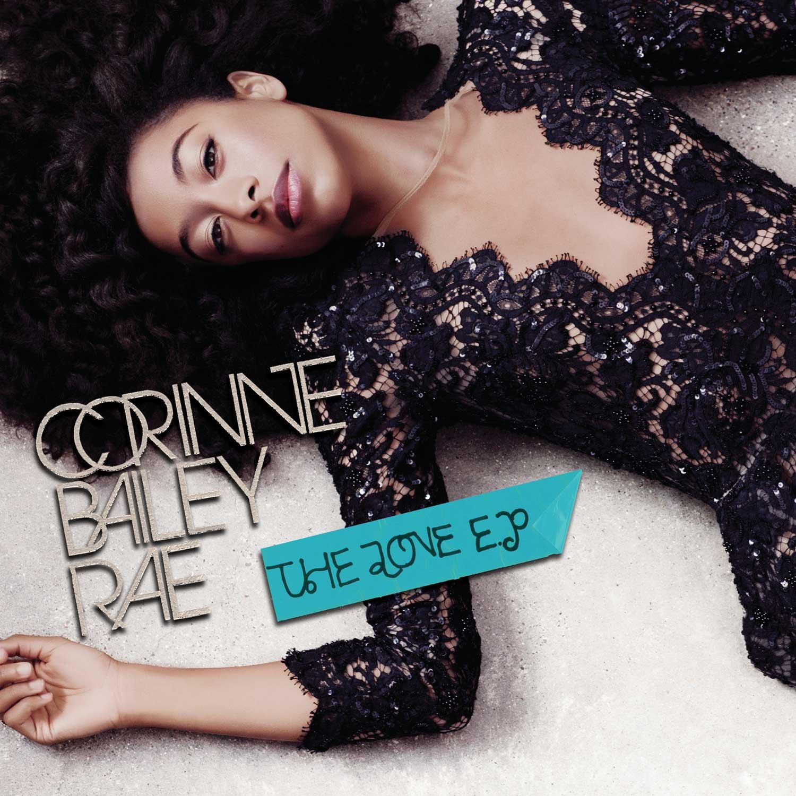

SPHINX OF
BLACK QUARTZ,
JUDGE MY VOW.
βαθύς Ancient Greek · adjective Deep; extending far beneath the surface.
Bathys grew out of the lettering used for Corinne Bailey Rae’s name on *The Sea* and *The Love EP* (which were **not** designed by me). Some letter pairs connect automatically; optional ligatures produce tighter overlaps closer to the original artwork. Bathys works best in titles and other short lines of text.
Try Bathys
Specimens
AFTER HOURS
SILVER SCREEN
PRIVATE VIEW / LATE MATINEE
AN EVENING AT THE THEATRE
LOVE IN SLOW MOTION
THURSDAY THROUGH SUNDAY
FEVER
EVERYWHERE
QUARTZ
QUARTZ
QUARTZ
Letters
ABCDEFG
HIJKLMN
OPQRSTU
VWXYZ
ABCDEFGHIJKLMNOPQRSTUVWXYZ
Inspect a character
.,:;!? & / + = ( ) ‘ ’ “ ”
Ligatures
All ligatures
Additional ligatures
AN EVENING AT THE THEATRE
A VIEW OF THE WATER
Reference
The lettering on these covers provided Bathys’s first ten capitals: A, B, C, E, I, L, N, O, R, and Y. The spiral S and raised crossbar take cues from the smaller title on *The Sea*. Artwork and design for *The Sea* are credited to Alex Cowper; *The Love EP* credits Randall Leddy for design and Gordon H. Jee for creative direction.


Download
OpenType fonts and webfonts. Width range 85–115.